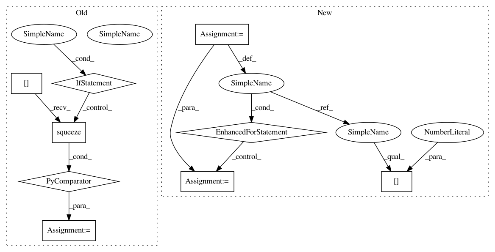

02c704530eab9c8376b029aab4047babda5c65b8,skimage/measure/_moments.py,,moments_contour_central,#Any#Any#Any#,51
Before Change
// for a contour of shape (N, D), the following
// produces an N x D**2 calculation of moments
// for the points, then sums along axis 0
calc = np.einsum(("i...," * ndim)[:-1],
(*
[calc[:, i::ndim].squeeze()
[..., (* ([np.newaxis] * i + [slice(None)]
+ [np.newaxis] * (ndim - i - 1)))]
for i in range(ndim)]))
return calc
After Change
return _expand(current, rest)
M = []
for point in calc:
M += [_expand(point[0], point[1:])]
calc = np.sum(M, axis=0)
return calc
In pattern: SUPERPATTERN
Frequency: 3
Non-data size: 9
Instances
Project Name: scikit-image/scikit-image
Commit Name: 02c704530eab9c8376b029aab4047babda5c65b8
Time: 2017-10-29
Author: contact@kne42.me
File Name: skimage/measure/_moments.py
Class Name:
Method Name: moments_contour_central
Project Name: rusty1s/pytorch_geometric
Commit Name: a998e7a1fa996edb4bcc1b34a0df5967ed6ec9e2
Time: 2020-05-13
Author: matthias.fey@tu-dortmund.de
File Name: torch_geometric/utils/convert.py
Class Name:
Method Name: to_networkx
Project Name: rusty1s/pytorch_geometric
Commit Name: 675b7884c09875486fdddffa2d8a6a12247ab4d7
Time: 2020-05-31
Author: matthias.fey@tu-dortmund.de
File Name: torch_geometric/utils/convert.py
Class Name:
Method Name: to_networkx
Project Name: scikit-image/scikit-image
Commit Name: 02c704530eab9c8376b029aab4047babda5c65b8
Time: 2017-10-29
Author: contact@kne42.me
File Name: skimage/measure/_moments.py
Class Name:
Method Name: moments_contour_central